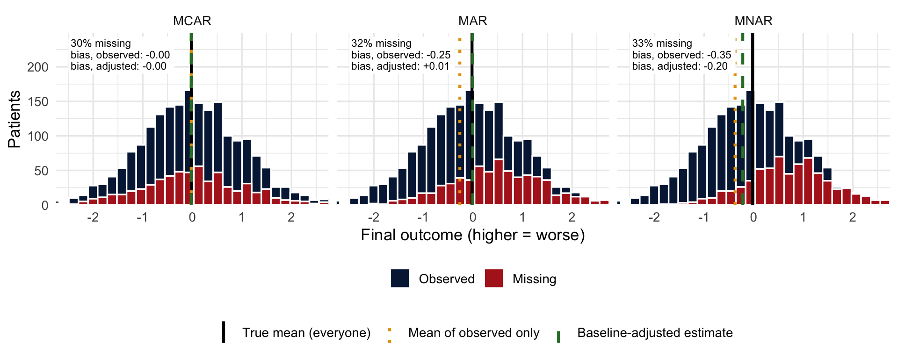

Code
set.seed(42)
n <- 2000
baseline <- rnorm(n) # observed for everyone
y <- 0.7 * baseline + rnorm(n, 0, sqrt(1 - 0.7^2)) # final outcome (higher = worse)
miss <- list(MCAR = rbinom(n, 1, 0.30), # a coin flip
MAR = rbinom(n, 1, plogis(-1 + 1.5 * baseline)), # depends on observed baseline
MNAR = rbinom(n, 1, plogis(-1 + 1.5 * y))) # depends on the outcome itself
est <- imap_dfr(miss, \(m, nm) {
obs <- m == 0
fit <- lm(y ~ baseline, subset = obs)
tibble::tibble(Mechanism = nm, pct = 100 * mean(m),
`True mean (everyone)` = mean(y), `Mean of observed only` = mean(y[obs]),
`Baseline-adjusted estimate` = mean(predict(fit, newdata = data.frame(baseline))))
}) |> mutate(Mechanism = factor(Mechanism, c("MCAR", "MAR", "MNAR")))
lines <- est |> select(-pct) |>
pivot_longer(-Mechanism, names_to = "Estimate", values_to = "x") |>
mutate(Estimate = factor(Estimate, c("True mean (everyone)", "Mean of observed only",
"Baseline-adjusted estimate")))
lab <- est |> mutate(label = sprintf("%.0f%% missing\nbias, observed: %+.2f\nbias, adjusted: %+.2f", pct,
`Mean of observed only` - `True mean (everyone)`,
`Baseline-adjusted estimate` - `True mean (everyone)`))
imap_dfr(miss, \(m, nm) tibble::tibble(Mechanism = nm, y = y,
Status = ifelse(m == 1, "Missing", "Observed"))) |>
mutate(Status = factor(Status, c("Observed", "Missing")),
Mechanism = factor(Mechanism, c("MCAR", "MAR", "MNAR"))) |>
ggplot(aes(y)) +
geom_histogram(aes(fill = Status), bins = 35, colour = "white") +
geom_vline(data = lines, aes(xintercept = x, colour = Estimate, linetype = Estimate), linewidth = 1.1) +
geom_label(data = lab, aes(x = -2.5, y = Inf, label = label), inherit.aes = FALSE,
hjust = 0, vjust = 1.1, size = 3, fill = "white", label.size = 0, lineheight = 0.9) +
scale_y_continuous(expand = expansion(mult = c(0, 0.5))) +
facet_wrap(~ Mechanism) +
scale_fill_manual(values = c(Observed = "#041E42", Missing = "#B22222"), name = NULL) +
scale_colour_manual(values = c("black", "#E69F00", "#2E7D32"), name = NULL) +
scale_linetype_manual(values = c("solid", "dotted", "dashed"), name = NULL) +
coord_cartesian(xlim = c(-2.5, 2.5)) +
labs(x = "Final outcome (higher = worse)", y = "Patients") +
theme(legend.position = "bottom", legend.box = "vertical")